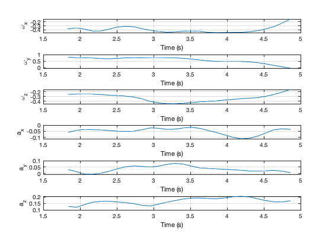
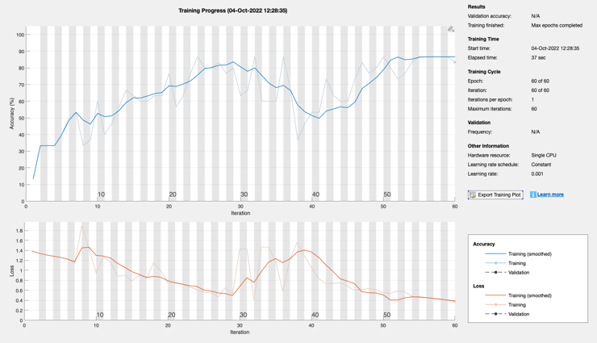

Contents
Script to train and test the dancer neural net
See also PlotSet, trainingOptions, categorical, trainNetwork, classify
clear d t c dancer = {'Ryoko' 'Shaye', 'Emily', 'Matanya'}; thisDir = fileparts(mfilename('fullpath')); cd0 = cd; cd(thisDir)
Show one dancer's data
cd TestData s = load('Ryoko_10.mat'); yL = {'\omega_x' '\omega_y' '\omega_z' 'a_x' 'a_y' 'a_z'}; PlotSet(s.time,s.state(1:6,:),'x label','Time (s)','y label',yL,'figure title',dancer{1});
Load in and process the data
n = 40; % Get the data and remove bad data sets i = 0; for k = 1:length(dancer) for j = 1:10 s = load(sprintf('%s_%d.mat',dancer{k},j)); cS = size(s.state,2); if( cS > 7 ) i = i + 1; d{i,1} = s.state; %#ok<*SAGROW> t{i,1} = s.time; c(i,1) = k; end end end cd(cd0) fprintf('%d remaining data sets out of %d total.\n',i,n) for k = 1:4 j = length(find(c==k)); fprintf('%7s data sets %d\n',dancer{k},j) end n = i; cd .. % Limit the range to 6 seconds tRange = 6; for i = 1:n j = find(t{i} - t{i,1} > tRange ); if( ~isempty(j) ) d{i}(:,j(1)+1:end)= []; end end
36 remaining data sets out of 40 total. Ryoko data sets 6 Shaye data sets 10 Emily data sets 10 Matanya data sets 10
Set up the network
numFeatures = 10; % 4 quaternion, 3 rate gyros, 3 accelerometers numHiddenUnits = 400; numClasses = 4; % Four dancers layers = [ ... sequenceInputLayer(numFeatures) bilstmLayer(numHiddenUnits,'OutputMode','last') fullyConnectedLayer(numClasses) softmaxLayer classificationLayer]; disp(layers) options = trainingOptions('adam', ... 'MaxEpochs',60, ... 'GradientThreshold',1, ... 'Verbose',0, ... 'Plots','training-progress');
5×1 Layer array with layers:
1 '' Sequence Input Sequence input with 10 dimensions
2 '' BiLSTM BiLSTM with 400 hidden units
3 '' Fully Connected 4 fully connected layer
4 '' Softmax softmax
5 '' Classification Output crossentropyex
Train the network
nTrain = 30; kTrain = randperm(n,nTrain); xTrain = d(kTrain); yTrain = categorical(c(kTrain)); net = trainNetwork(xTrain,yTrain,layers,options);
Test the network
kTest = setdiff(1:n,kTrain); xTest = d(kTest); yTest = categorical(c(kTest)); yPred = classify(net,xTest); % Calculate the classification accuracy of the predictions. acc = sum(yPred == yTest)./numel(yTest); disp('Accuracy') disp(acc);
Accuracy
0.33333
Copyright
Copyright (c) 2019 Princeton Satellite Systems, Inc. All rights reserved.